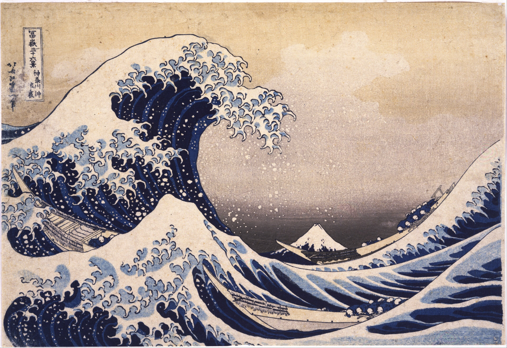
1 Press play first
Painting with sound
While the painters were busy rebelling, a French composer named Claude Debussy was doing the same thing with music. People often call him the first Impressionist composer.
Just like Monet painted light instead of objects, Debussy "painted" with floating, blurry, dreamy sounds. He wanted you to feel a mood, not follow a story.
The wave connection: Debussy loved Hokusai's Great Wave so much that he kept a copy in his workroom and asked for it to go right on the cover of his sea music, La Mer (1905). Hokusai had painted the sea in ink; Debussy was painting the same crashing sea in sound.
And it links to the painters too. A craze for Japanese prints (people call it Japonisme) swept through the Impressionists at the very same time. Monet covered the walls of his house at Giverny with Japanese prints, and Van Gogh collected hundreds of them and even copied some in paint. So the same wave of Japanese art washed over the music and the painting.
Tip: start it quietly and let it loop under the whole lesson.
2 Before the rebels
The "perfect" paintings everyone loved
To show your art in France, you had to please the Salon — a jury of stern old professors. They liked giant, glassy-smooth paintings of gods, kings, and battles. No brushstrokes allowed.
Cabanel's Birth of Venus (1863) was a smash hit — the Emperor himself bought it. Zoom in: the surface is so smooth you can barely find a brushstroke.
The funny part: in 1863 so many artists got rejected that they held a "Salon of the Rejected." People came just to laugh at the weird new paintings. Those rejects became the most famous artists in history. 😎
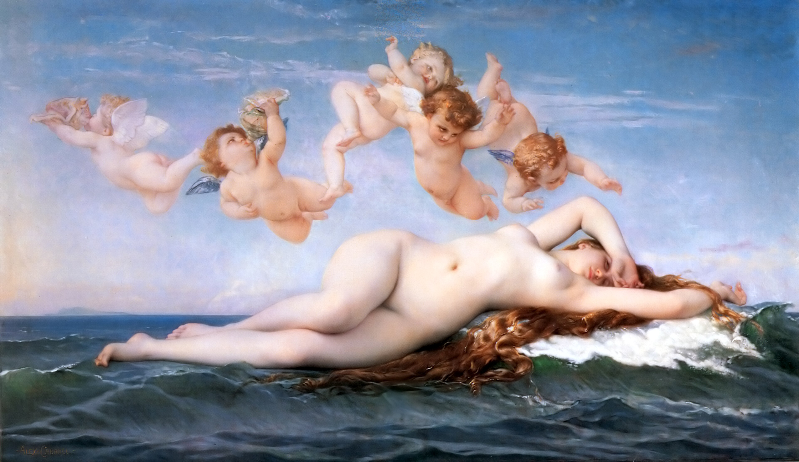
3 Meet the gang
Four rebels, four personalities
They weren't a perfect team — they were a bunch of stubborn, weird, brilliant individuals. Here's what each one was really like.
Claude Monet
- Obsessed with light and time, not objects.
- So poor early on he once tried to drown himself in the river — and sometimes couldn't afford paint.
- Dug a trench in his garden so a giant canvas could sink into the ground while he painted.
- Another painter said of him: "Monet is only an eye — but my God, what an eye!"
Edgar Degas
- Loved watching people who didn't know they were being watched — dancers, racehorses.
- Grouchy loner who never married. Hated the word "Impressionist" — called himself a "Realist."
- Made roughly 1,500 ballet artworks — but tired, yawning, shoe-fixing dancers, never perfect princesses.
- When his eyes failed, he switched to chunky pastels and sculpture he could feel.
Vincent van Gogh
- Painted feelings, not facts — thick swirls squeezed straight from the tube.
- Barely sold a single painting while alive. Failed as a preacher and an art dealer first.
- Wrote hundreds of loving letters to his brother Theo, who paid his bills.
- Made about 2,000 artworks in just 10 years.
Georges Seurat
- No blending! Millions of tiny dots of pure color — your eye mixes them, like screen pixels.
- So secretive he hid a girlfriend and a baby from all his friends.
- Died suddenly at just 31.
- La Grande Jatte took two years and about 60 practice studies; it's about 10 feet wide.
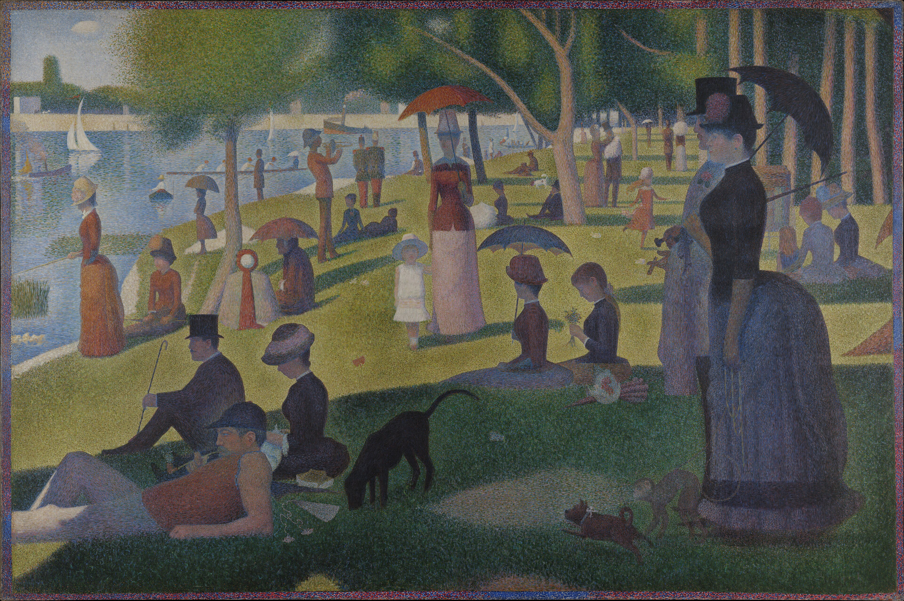
The dot trick
Cast this big, then zoom all the way in: the whole park is built from tiny separate dots of pure color. Step back (or walk across the room) and your eyes blend the dots into people, grass and sunshine.
Seurat thought this was more scientific and more glowing than mixing paint on a palette. When he first showed it, critics screamed "bedlam!" and "scandal!"
Tap the painting and zoom right in: those aren't brushstrokes, they're thousands of separate dots. Zoom back out and they melt into a sunny afternoon.
★ Painter up close · The Light Chaser

Claude Monet
He chased the light for sixty years.
Monet didn't really paint things — he painted light. Give him a haystack, a train station, or a stone cathedral and he'd paint it again and again, just to catch how it looked at sunrise, at noon, and in the fog. People laughed at his blurry style at first. One grumpy critic sneered that it looked like a sloppy "impression," not a real painting, so the whole gang got stuck with the insult as their name forever. Today "Impressionist" is a badge of honour. A fellow painter once said of him: "Monet is only an eye — but my God, what an eye!"
- As a teenager in the seaside town of Le Havre, he drew funny caricatures of locals and sold them for pocket money — before he ever painted seriously.
- A painter named Eugène Boudin dragged young Monet outdoors to paint real life instead of in a stuffy studio. He never forgot it.
- His 1872 painting Impression, Sunrise accidentally gave the whole movement its name in 1874 — a critic used the title as an insult.
- He was poor for years; creditors sometimes seized his paintings to pay his debts.
- He spent his last 40 years in a garden he built himself at Giverny, digging a lily pond and building a green Japanese bridge — his garden became his favourite model.
- "My garden is my most beautiful masterpiece," he liked to say.
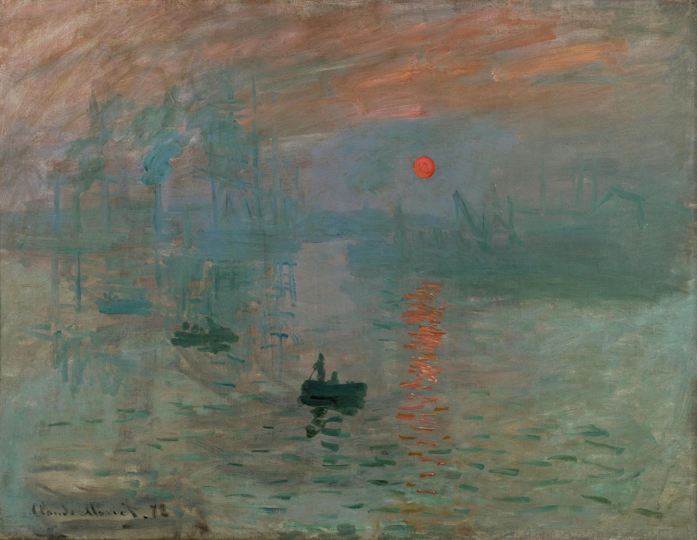


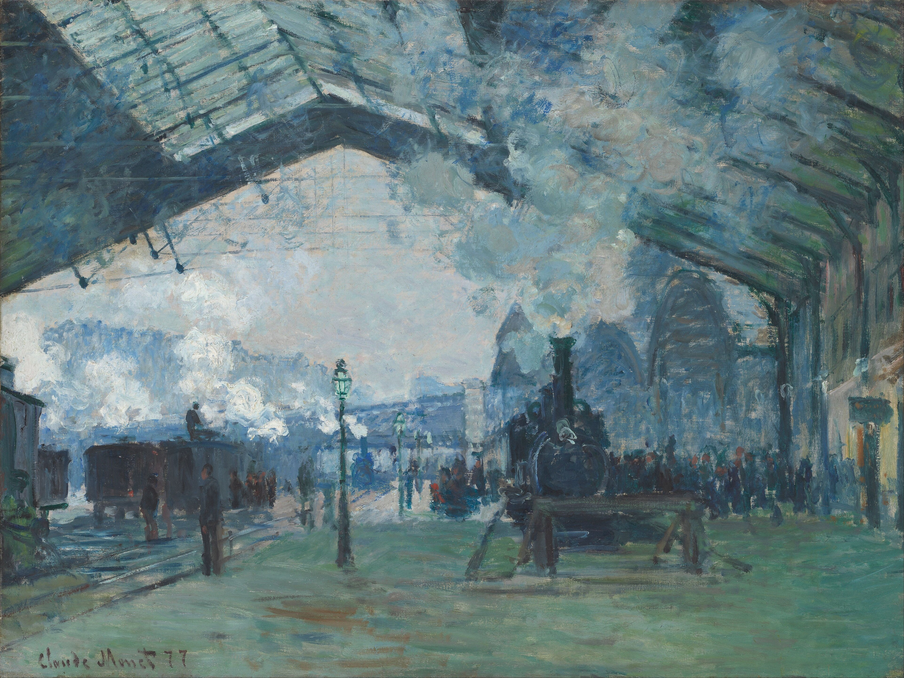
★ Painter up close · The Heart on Fire

Vincent van Gogh
He painted feelings, not facts.
Van Gogh painted like his hair was on fire. In about ten years he made roughly 2,100 artworks — squeezing paint straight from the tube and slathering it on so thick you can still see the bumps today. He loved the colour yellow, painted sunflowers and starry skies, and wrote hundreds of letters to his brother Theo, who believed in him when almost nobody else did.
- He sometimes finished a whole painting in a single day — and most of his most famous works came in just his last two years.
- He sold barely any paintings while he was alive. Fame only came after he died.
- About 820 of his letters survive — more than 650 of them written to his brother Theo, who sent him money and paint for years.
- He didn't start painting seriously until he was about 27 — after flopping as an art dealer and failing to become a preacher.
- He loaded his brush with thick paint straight from the tube (a style called impasto), so the surface looks bumpy and 3-D up close.
- His brain and feelings made life very hard for him, the way an illness makes your body sick. During one bad spell in 1888 he hurt his own ear. In 1889 he was brave enough to check himself into a hospital to get help — and he kept right on painting there, making some of his greatest works of all.


★ Painter up close · The Dot Scientist
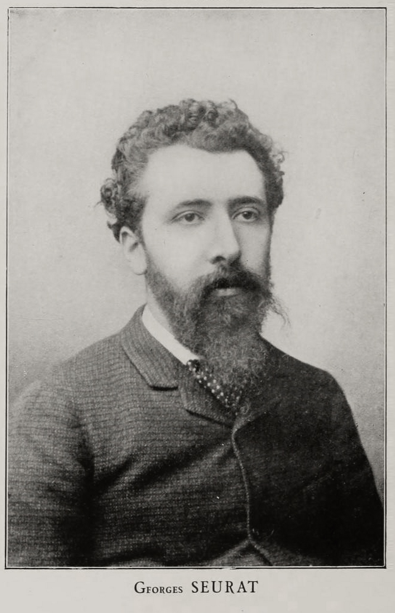
Georges Seurat
He painted with science instead of a palette.
Seurat looked at a blank canvas the way a scientist looks at an experiment. Instead of mixing colours on a palette, he covered his paintings with millions of tiny separate dots of pure colour (blue right next to yellow, red next to green), and let your eyes do the mixing from a few steps back. Up close: a blizzard of coloured specks. Step back: shimmering sunlight, water and crowds — built from nothing but dots.
- He painted with thousands of tiny dots of pure colour placed side by side — people call it Pointillism (Seurat preferred "Divisionism").
- The mixing happens in your eyeballs, not on the canvas: two dots far away blend into one brighter colour, the same trick a phone or TV screen uses.
- He read actual science books about colour and light, then painted like a lab experiment — no guessing, all rules.
- His giant A Sunday on La Grande Jatte took about two years and around 60 practice studies; the canvas is about 10 feet (3 m) wide.
- He sometimes painted a dotted border right onto the canvas, so the picture met the frame in his own colours.
- He died very young and very suddenly at 31; doctors were never sure what illness killed him. His last painting, The Circus, was left unfinished.
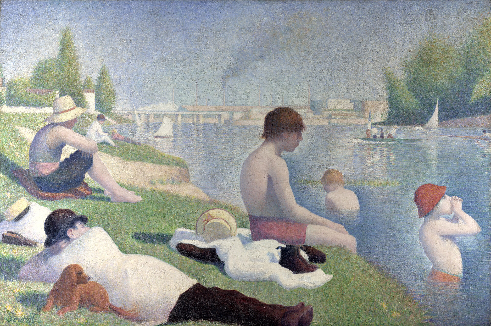


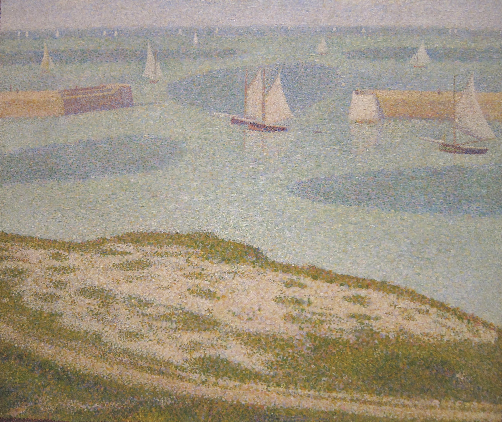
★ Painter up close · The Grumpy Spy

Edgar Degas
The painter who watched when no one was looking.
Degas (say it "day-GAH") loved to watch people when they weren't looking. Instead of kings or perfect princesses, he drew ballet dancers yawning, scratching and tying their shoes, and racehorses fidgeting before a race. He wanted his pictures to feel like peeking through a keyhole at a real, in-between moment.
- He loved unposed, in-between moments (dancers stretching, resting, fixing a shoe) instead of grand poses.
- He was famous for ballet dancers and made hundreds of works of them over his life.
- He hated the word "Impressionist" and called himself a "Realist" — even though he helped organise the Impressionist shows.
- He didn't paint outdoors; he worked from memory and sketches in his studio and reworked things many times.
- As his eyesight failed, he switched to bold, soft pastels and to sculpture he could feel with his hands. He was also a keen photographer.
- His wax statue The Little Fourteen-Year-Old Dancer, dressed in a real cloth tutu, shocked visitors in 1881 — the only sculpture he showed publicly in his lifetime.


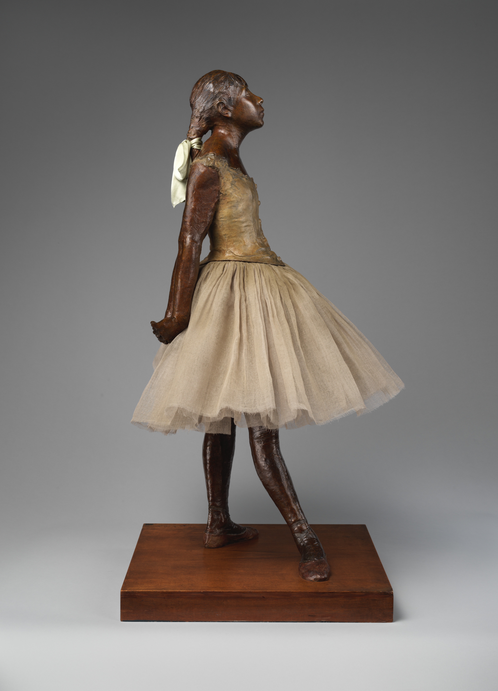
4 The big experiment
Same haystack, 25 times
Monet painted the same haystacks outside his house twenty-five times. Why?! Because he wasn't really painting hay — he was painting the light, and light never stops changing. These three are all real Monets from the Art Institute of Chicago.
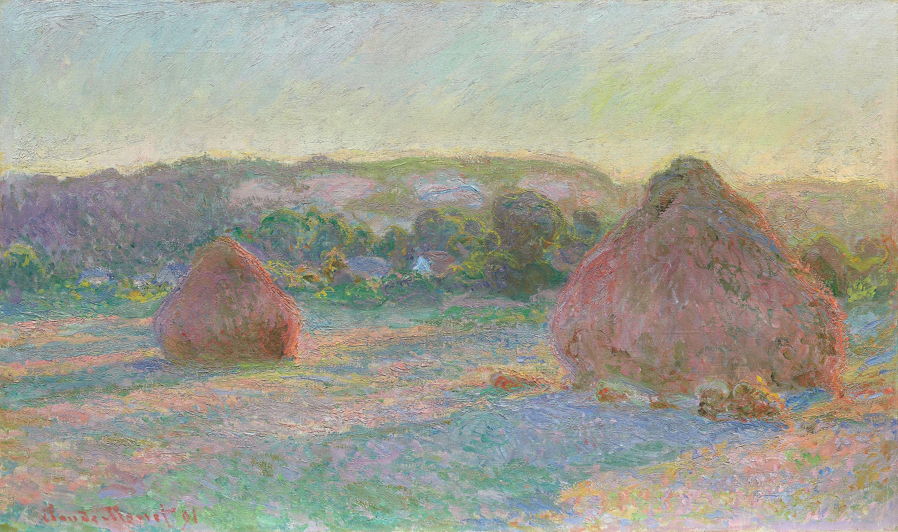

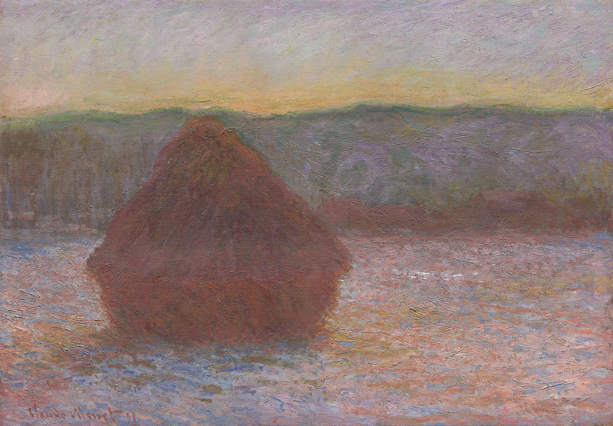
Ask the kids: Same hay — what's different? What time of day? What season? How does each one feel? Then tap one and zoom in: up close, the haystack isn't even yellow. It's browns, reds, and soft purples soaking up the light.
5 How it grew
From one idea to a whole staircase
Impressionism wasn't one thing — it grew and split into new styles, each climbing higher.
paint real → paint light → paint time → paint dots → paint feelings
A late haystack painting reportedly dazzled a young artist named Kandinsky in 1896 — who went on to invent fully abstract art. The torch kept passing.
6 The secret engine
How color (and a metal tube) changed everything
The rebels couldn't paint bright until science invented bright paint, and gave them a way to carry it outside. Tap along the row below and watch the world go from the mud palette of earlier centuries to a real rainbow of colours sold in tubes.
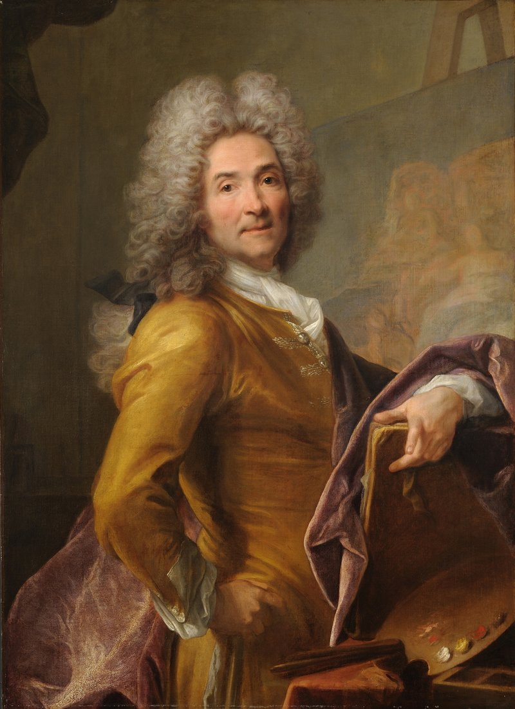
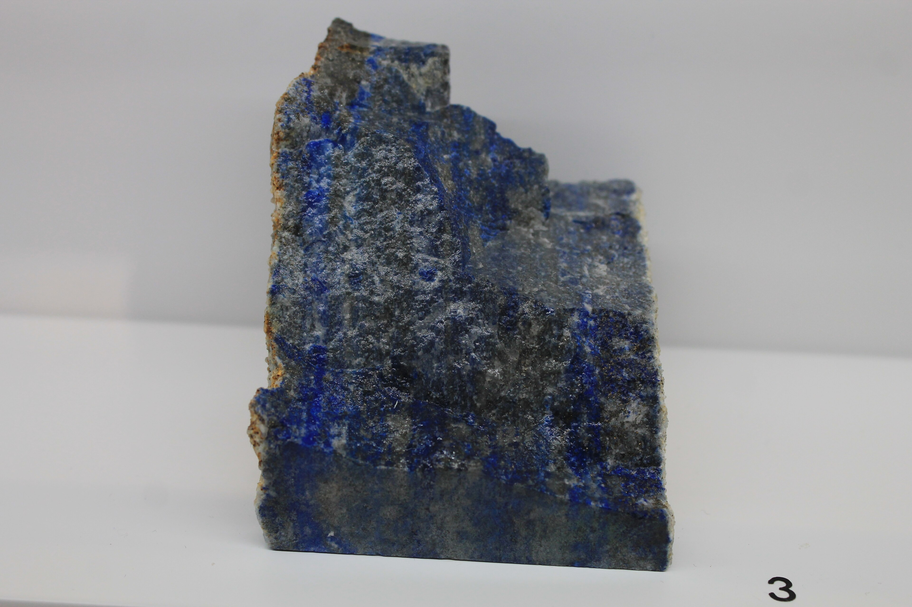
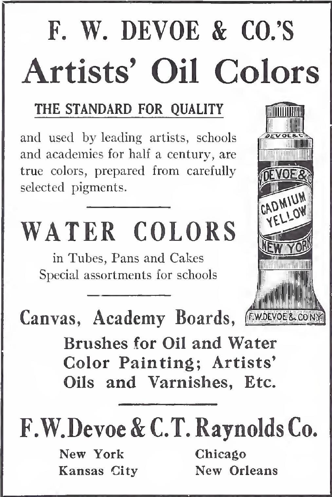
What actually changed
- Old palette = mud. Bright blue (ultramarine) once cost more than gold — it was ground from a gemstone!
- Chemistry exploded. Cobalt blue (~1802–07), cadmium yellow (~1820), viridian green (1838), cerulean blue (1860). The 1800s made more new colors than the previous 2,000 years combined.
- The metal paint tube (patented 1841) let artists carry paint outside and chase real sunlight. Before it, paint was squeezed from a pig's bladder you pricked with a tack — messy, and it dried out fast. Renoir is often quoted as saying that without the tube there would have been no Impressionism.
- Pissarro bragged he had banished the old dull "earth" colors. Van Gogh loved the cheap new chrome yellow that makes Starry Night glow.
Zoom challenge
Now tap the real Starry Night at the top, or any haystack, and zoom until it's just blobs of paint — then zoom out until it snaps back into a picture. That's investigating brushstrokes like a museum scientist.
7 Your turn
Which painter are you?
Make your own
- The two-tree challenge: paint the same tree twice — once "smooth like the Salon," once "how it feels."
- The Monet challenge: paint the same thing at two different times of day, like the haystacks.
- The Debussy challenge: play a song and scribble the colors and shapes you hear.